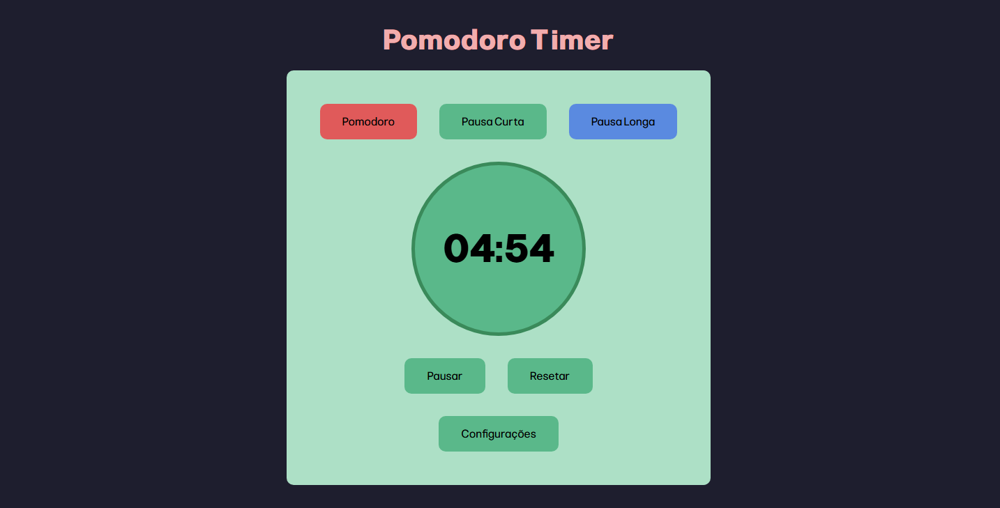
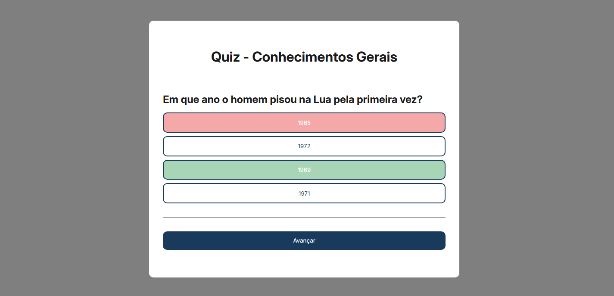
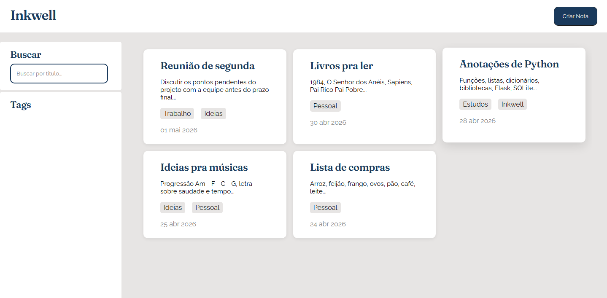
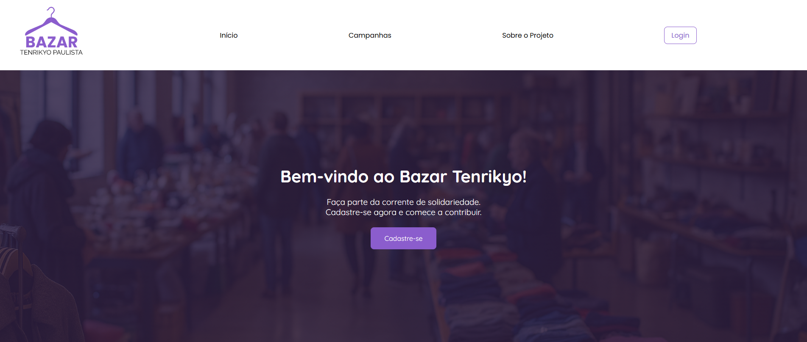
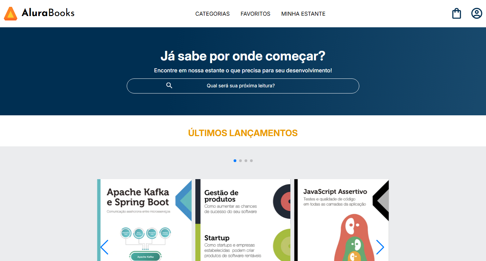

Meus Projetos

Pomodoro Timer
Um temporizador Pomodoro desenvolvido com HTML, CSS e JavaScript puro. Possui controle de timer por botões, troca automática entre modos, aviso sonoro ao encerrar o tempo, controle manual ou automático do tempo de cada modo.

Quiz
Quiz interativo de conhecimentos gerais desenvolvido com HTML, CSS e JavaScript puro. Possui 5 perguntas de conhecimentos gerais com 4 alternativas por pergunta. Além disso conta com feedback visual de acerto e erro e pontuação final.

Inkwell - Editor de Notas
Um aplicativo de notas minimalista desenvolvido como projeto de portfólio. Com o Inkwell é possível criar, editar, deletar e visualizar notas, separar e filtrar por tags criadas pelo usuário, buscar notas por título entre outras funcionalidades.

Bazar Tenrikyo - Gerenciamento de Doações
Sistema web para gerenciamento de doações de um bazar, permitindo o cadastro de campanhas, doações e controle de itens. Sistema desenvolvido como TCC do curso técnico de Desenvolvimento de Sistemas (ETEC).

Alurabooks
Landing page de uma livraria online desenvolvida durante curso da Alura. Conta com um menu hamburguer responsivo, carrossel de últimos lançamentos e mais vendidos, seção de tópicos visitados recentemente, campo de cadastro de email para newsletter e layout responsivo para mobile e desktop.